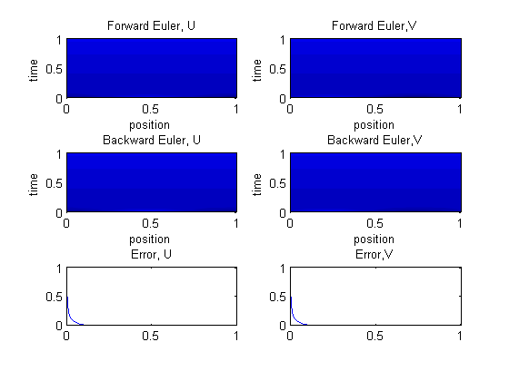
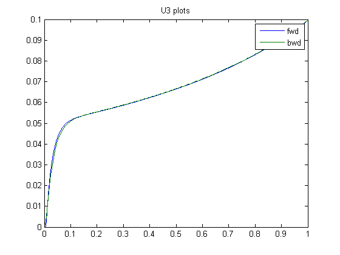
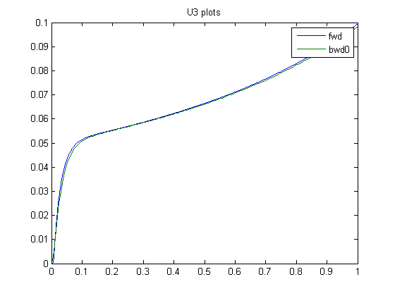
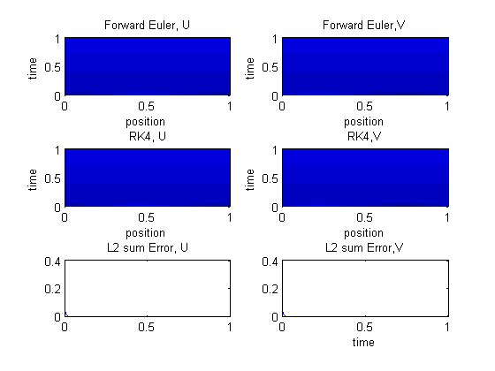
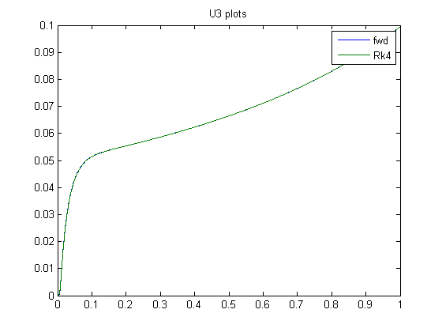

function compare
clc
close all
x=linspace(0,1,20);
tmax=1;
dt1=tmax/20;
t1=linspace(0,tmax,20);
dt2=tmax/200;
t2=linspace(0,tmax,200);
dt3=tmax/2000;
t3=linspace(0,tmax,2000);
N=20;
dx=1/20;
D=-2*eye(N,N)+diag(diag(eye(N-1,N-1)),1)+diag(diag(eye(N-1,N-1)),-1);
D(1,N)=1;
D(N,1)=1;
u=zeros(N,1);
v=u;
u(10)=1;
v(5)=1;
U=zeros(20,2000);
V=U;
U(:,1)=u;
V(:,1)=v;
for i=2:2000,
U(:,i)=fem(D,U(:,i-1),V(:,i-1),dt3,dx);
V(:,i)=fem(D,V(:,i-1),U(:,i-1),dt3,dx);
end
size(U)
U2=zeros(N,200);
V2=zeros(N,200);
E2=U2;
EE2=V2;
U2(:,1)=u;
V2(:,1)=v;
for i=2:200,
U2(:,i)=bwd(D,U2(:,i-1),U(:,i*10),V(:,i*10),dt2,dx);
V2(:,i)=bwd(D,V2(:,i-1),U(:,i*10),V(:,i*10),dt2,dx);
E2(:,i)=abs(U(:,i*10)-U2(:,i));
EE2(:,i)=abs(V(:,i*10)-V2(:,i));
end
figure
subplot(3,2,1)
[X,T]=meshgrid(t3,x);
size(X)
size(T)
h=pcolor(T,X,U);
colormap(jet)
shading interp
set(h,'edgecolor','none');
xlabel('position')
ylabel('time')
title('Forward Euler, U');
subplot(3,2,2)
h=pcolor(T,X,V);
colormap(jet)
shading interp
xlabel('position')
ylabel('time')
set(h,'edgecolor','none');
title('Forward Euler,V');
subplot(3,2,3)
[X,T]=meshgrid(t2,x);
size(X)
size(T)
h=pcolor(T,X,U2);
colormap(jet)
shading interp
set(h,'edgecolor','none');
xlabel('position')
ylabel('time')
title('Backward Euler, U');
subplot(3,2,4)
h=pcolor(T,X,V2);
colormap(jet)
shading interp
xlabel('position')
ylabel('time')
set(h,'edgecolor','none');
title('Backward Euler,V');
sum(E2)
subplot(3,2,5)
plot(t2,sum(E2))
title('Error, U');
subplot(3,2,6)
plot(t2,sum(EE2))
title('Error,V');
figure
plot(t3,U(3,:),t2,U2(3,:))
title('U3 plots')
legend('fwd','bwd')
for i=2:200,
U2(:,i)=bwd2(D,U2(:,i-1),V2(:,i-1),dt2,dx);
V2(:,i)=bwd2(D,V2(:,i-1),U2(:,i-1),dt2,dx);
E2(:,i)=abs(U(:,i*10)-U2(:,i));
EE2(:,i)=abs(V(:,i*10)-V2(:,i));
end
figure
subplot(3,2,1)
[X,T]=meshgrid(t3,x);
size(X)
size(T)
h=pcolor(T,X,U);
colormap(jet)
shading interp
set(h,'edgecolor','none');
xlabel('position')
ylabel('time')
title('Forward Euler, U');
subplot(3,2,2)
h=pcolor(T,X,V);
colormap(jet)
shading interp
xlabel('position')
ylabel('time')
set(h,'edgecolor','none');
title('Forward Euler,V');
subplot(3,2,3)
[X,T]=meshgrid(t2,x);
size(X)
size(T)
h=pcolor(T,X,U2);
colormap(jet)
shading interp
set(h,'edgecolor','none');
xlabel('position')
ylabel('time')
title('Backward Euler0, U');
subplot(3,2,4)
h=pcolor(T,X,V2);
colormap(jet)
shading interp
xlabel('position')
ylabel('time')
set(h,'edgecolor','none');
title('Backward Euler0,V');
subplot(3,2,5)
plot(t2,sum(E2))
title('L2 sum Error, U');
subplot(3,2,6)
plot(t2,sum(EE2))
title('L2 sum Error,V');
xlabel('time')
figure
plot(t3,U(3,:),t2,U2(3,:))
title('U3 plots')
legend('fwd','bwd0')
U3=zeros(size(U));
V3=U3;
U3(:,1)=u;
V3(:,1)=v;
for i=2:2000,
[U3(:,i),V3(:,i)]=rk4(D,U3(:,i-1),V3(:,i-1),dt3,dx);
E2(:,i)=abs(U(:,i)-U3(:,i));
EE2(:,i)=abs(V(:,i)-V3(:,i));
end
figure
subplot(3,2,1)
[X,T]=meshgrid(t3,x);
size(X)
size(T)
h=pcolor(T,X,U);
colormap(jet)
shading interp
set(h,'edgecolor','none');
xlabel('position')
ylabel('time')
title('Forward Euler, U');
subplot(3,2,2)
h=pcolor(T,X,V);
colormap(jet)
shading interp
xlabel('position')
ylabel('time')
set(h,'edgecolor','none');
title('Forward Euler,V');
subplot(3,2,3)
h=pcolor(T,X,U3);
colormap(jet)
shading interp
set(h,'edgecolor','none');
xlabel('position')
ylabel('time')
title('RK4, U');
subplot(3,2,4)
h=pcolor(T,X,V3);
colormap(jet)
shading interp
xlabel('position')
ylabel('time')
set(h,'edgecolor','none');
title('RK4,V');
subplot(3,2,5)
plot(t3,sum(E2))
title('L2 sum Error, U');
subplot(3,2,6)
plot(t3,sum(EE2))
title('L2 sum Error,V');
xlabel('time')
figure
plot(t3,U(3,:),t3,U3(3,:))
title('U3 plots')
legend('fwd','Rk4')
return
function unext=fem (D,u,v,dt,dx)
unext=((1/dx^2)*D*u+10*u.*v)*dt+u;
return
function unext=fem2(D,u,v,dt,dx)
unext=((1/dx^2)*D*u+10*u.*v)*dt;
return
function unext=bwd (D,u,u0,v0,dt,dx)
I=eye(20,20);
unext=(I-(dt/dx^2)*D)\(u+10*u0.*v0*dt);
function unext=bwd2 (D, u, v, dt,dx)
I=eye(20,20);
unext=(I-(dt/dx^2)*D)\(u+10*u.*v*dt);
function [unext,vnext]=rk4 (D,u,v,dt,dx)
u1=fem2(D,u,v,dt,dx);
v1=fem2(D,v,u,dt,dx);
u2=fem2(D,u+u1/2,v+v1/2,dt,dx);
v2=fem2(D,v+v1/2,u+u1/2,dt,dx);
u3=fem2(D,u+u2/2,v+v2/2,dt,dx);
v3=fem2(D,v+v2/2,u+u2/2,dt,dx);
u4=fem2(D,u+u3,v+v3,dt,dx);
v4=fem2(D,v+v3,u+u3,dt,dx);
unext=u+1/6*(u1+2*u2+2*u3+u4);
vnext=v+1/6*(v1+2*v2+2*v3+v4);
return
ans =
20 2000
ans =
20 2000
ans =
20 2000
ans =
20 200
ans =
20 200
ans =
Columns 1 through 6
0 0.5051 0.2944 0.2128 0.1645 0.1355
Columns 7 through 12
0.1133 0.0988 0.0861 0.0750 0.0652 0.0567
Columns 13 through 18
0.0492 0.0426 0.0369 0.0319 0.0275 0.0237
Columns 19 through 24
0.0204 0.0176 0.0151 0.0130 0.0111 0.0095
Columns 25 through 30
0.0082 0.0070 0.0060 0.0051 0.0043 0.0037
Columns 31 through 36
0.0032 0.0027 0.0023 0.0020 0.0017 0.0014
Columns 37 through 42
0.0012 0.0010 0.0009 0.0008 0.0007 0.0006
Columns 43 through 48
0.0006 0.0005 0.0005 0.0005 0.0005 0.0005
Columns 49 through 54
0.0006 0.0006 0.0006 0.0006 0.0006 0.0006
Columns 55 through 60
0.0006 0.0006 0.0006 0.0007 0.0007 0.0007
Columns 61 through 66
0.0007 0.0007 0.0007 0.0007 0.0007 0.0007
Columns 67 through 72
0.0008 0.0008 0.0008 0.0008 0.0008 0.0008
Columns 73 through 78
0.0008 0.0008 0.0009 0.0009 0.0009 0.0009
Columns 79 through 84
0.0009 0.0009 0.0009 0.0009 0.0010 0.0010
Columns 85 through 90
0.0010 0.0010 0.0010 0.0010 0.0010 0.0011
Columns 91 through 96
0.0011 0.0011 0.0011 0.0011 0.0011 0.0011
Columns 97 through 102
0.0012 0.0012 0.0012 0.0012 0.0012 0.0012
Columns 103 through 108
0.0013 0.0013 0.0013 0.0013 0.0013 0.0013
Columns 109 through 114
0.0014 0.0014 0.0014 0.0014 0.0014 0.0015
Columns 115 through 120
0.0015 0.0015 0.0015 0.0015 0.0015 0.0016
Columns 121 through 126
0.0016 0.0016 0.0016 0.0017 0.0017 0.0017
Columns 127 through 132
0.0017 0.0017 0.0018 0.0018 0.0018 0.0018
Columns 133 through 138
0.0018 0.0019 0.0019 0.0019 0.0019 0.0020
Columns 139 through 144
0.0020 0.0020 0.0020 0.0021 0.0021 0.0021
Columns 145 through 150
0.0021 0.0022 0.0022 0.0022 0.0022 0.0023
Columns 151 through 156
0.0023 0.0023 0.0024 0.0024 0.0024 0.0024
Columns 157 through 162
0.0025 0.0025 0.0025 0.0026 0.0026 0.0026
Columns 163 through 168
0.0027 0.0027 0.0027 0.0028 0.0028 0.0028
Columns 169 through 174
0.0029 0.0029 0.0029 0.0030 0.0030 0.0031
Columns 175 through 180
0.0031 0.0031 0.0032 0.0032 0.0032 0.0033
Columns 181 through 186
0.0033 0.0034 0.0034 0.0035 0.0035 0.0035
Columns 187 through 192
0.0036 0.0036 0.0037 0.0037 0.0038 0.0038
Columns 193 through 198
0.0039 0.0039 0.0040 0.0040 0.0041 0.0041
Columns 199 through 200
0.0042 0.0042
ans =
20 2000
ans =
20 2000
ans =
20 200
ans =
20 200
ans =
20 2000
ans =
20 2000
 

  